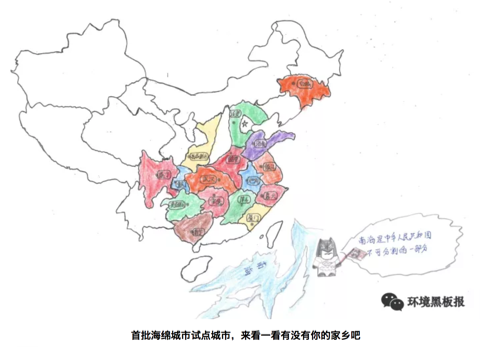
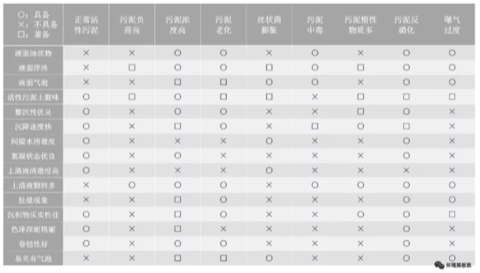
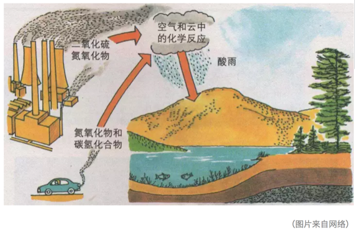

第4章 城市生态
4.1 城市之殇
4.1.1 序言
2012年7月21日，一场61年一遇的大暴雨让北京成为“汪洋水城”，想不到有生之年居然可以在帝都这个缺水的城市同时实现了“山盟海誓”。无独有偶，不仅北京遭遇了这样的窘境与困惑，其他城市诸如南京、武汉、广州、杭州等也先后开启了“看海模式”，这种“城市之殇”已经成为近年来城市发展挥之不去的阴影。

那么，为什么我们城市的排水能力一遇到暴雨甚至中小雨就原形毕露？这就有必要来聊一聊本期的话题：“海绵体”。海绵体，顾名思义，是一种对蓄水的形容，自然界原本是一个巨大的海绵体，而如今城市的爆发式发展建设已严重破坏了自然的海绵体，损害了自然的水循环系统。传统的城市建设模式根本不具备应对超标雨水的能力，那么必然会导致“逢雨必涝”，同时还会带来水环境污染、水资源紧缺、水安全缺乏保障等问题。
2013年12月12日，习近平总书记在《中央城镇化工作会议》的讲话中强调：“提升城市排水系统时要优先考虑把有限的雨水留下来，优先考虑更多利用自然力量排水，建设自然存积、自然渗透、自然净化的海绵城市”。海绵城市顺应时代号召应“运”而生。
4.1.2 海绵城市是什么
海绵城市的理念其实在我国古代早已践行，比如故宫的排水系统、云南的“哈尼梯田”模式、赣州的“福寿沟”蓄排系统等，都算作是早前的雏形。若要刨根求底地问海绵城市是什么，海绵城市更多的是一种新型的城市发展模式。

海绵城市的初衷是让城市能够像海绵一样，在适应环境变化和应对自然灾害等方面具有良好的“弹性”。简单来说，下雨的时候，城市可以像海绵一样吸水、蓄水、渗水，防止洪涝的出现；在雨水过后，干旱的时候，又可以将蓄存的水“释放”并加以利用。但同时，我们又希望这个“海绵”能发挥更大的作用，比如说还可以净化水体，让雨水在城市存积、渗透的同时得到净化，以利于进一步的雨水资源利用和生态环境保护。这就为海绵城市的设计、建设提出了更高的要求，不单是依靠恢复或构建自然途径来蓄水、存水，还应当结合人工措施来辅以完成水资源的净化、利用和排放。

因此海绵城市的具体建设既不能“窄”，也不能“宽”。太窄就会回到植树造林搞绿化的老路子上去；太宽就会变成“海绵城市一个框，啥都可以往里装”。其实海绵城市建设还是要以目标与问题为导向，运用“源头、中途、末端”的措施，使绿色设施与灰色措施相结合，才能实现真正的目标。
简明地讲，源头主要以低影响开发设施（LID）为主，包括植草沟、雨水花园、生物滞留设施等，中途主要包括：雨水廊道、管网、沟渠等，末端主要包括：湿地、调蓄塘、调蓄池、水系等。

4.1.3 海绵城市试点
海绵城市的建设借助国家重视生态环境的东风，目前共执行了2个批次、30个城市的试点，试点期3年。期内国家将给予直辖市每年6亿专项补助，省会城市每年5亿，其他城市每年4亿元。


目前来看，海绵城市建设还没有一个全国性的“统一标准”，主要是因为我国地域差异大，东西南北中，面临的问题与挑战各不相同。比如北方地区多为缺水的寒带地区，南方地区则更容易发生内涝，西部地区多属于湿陷性黄土地区，也极度缺水。因此不同区域的海绵城市建设也应因地制宜。
4.1.4 浅谈海绵感悟
笔者从2015年开始从事海绵城市建设方面的工作，先后参与了多地的海绵城市试点建设的咨询、设计等工作，主要涉及海绵城市建设系统方案编制等方面。这里跟大家分享一下三年多来笔者对海绵城市建设的一些想法与感悟，希望能对现在或将来参与到海绵城市建设中的同仁们有所帮助。
4.1.4.1 从管理部门的角度
如果您是一位相关部门的负责人，笔者虽人微言轻，但也愿意提供一些思考供您参考。 海绵城市的建设是一个很复杂、庞大、时间跨度也大的系统工程。而且里面涉及到很多学科和部门，简单数数就需要规划、市政、园林、水利、道路等专业；住建、水利、园林、环保等部门来互相配合。因此如何统筹规划，通力协作，避免形成各自为政、“九龙治水”的局面，是一门很深的学问。
同时，很多城市现在都有新、老城区，新城区建设制约少、阻力小，一旦方案设计得当，大可一马平川。但是老城区就不一样了，不仅居民多、遗留矛盾和问题多多，牵一发而动全身，搞不好容易激化矛盾。这个时候，就不能只顾海绵城市建设的目标，还要考虑经济承受能力、轻重缓急、资金利用效率、建设时序、社会影响等方面。 千万、千万不能不分轻重地全面开工建设和盲目翻挖。最好可以以解决城市内涝、雨水利用、黑臭治理为突破口，结合棚户区和城乡危房改造、老旧小区有机更新等工作同步推进。
4.1.4.2 从项目公司负责人的角度
当前海绵城市的建设基本上都以项目打包的形式交由PPP公司全权负责建设。如果您是一位项目公司的负责人，首先恭喜您拿下了海绵城市的项目，但是接着愁人的事情来了。在很多项目管理过程中，一些PPP公司“当家不做主”，没有自主权，项目的管控不是由PPP公司独立操作，而会受到相关部门的干预，导致指挥不合理的局面。因此，如果您能在项目开展前和相关部门做好充分的沟通，对您后续工作的开展会有很大帮助。 同时，虽然目前海绵城市都处在建设之中，但是即使这样，试点期也已经过了2-3年，后期的运营维护也该做一些考虑了。如果您公司还没有做这方面的准备，那可千万要小心了，现在环境追责可是很严重的哦。
4.1.4.3 从设计师的角度
如果您是一名规划师或者设计师，请一定要“迈开腿，管好嘴”。一定要多去现场，没有调查就没有发言权，不能板凳一坐就站不起身，嘴皮一碰就出方案。曾经有一位设计院的设计师理直气壮地反驳说没必要去现场看这么细，走了个过场回来，后来设计的时候全部依靠业主来提供信息作为依据。结果可想而知，做出来的设计方案根本经不起推敲，漏洞百出，更别说拿去指导施工建设。

同时也提醒大家，海绵城市建设不只是“搞种植、搞绿化”。“花花草草”固然重要，但我们也不能天天搞“拈花惹草”的老一套。海绵城市的实质应该是绿色设施（雨水花园，植草沟，下凹式绿地等）与灰色设施（管网，泵站，调蓄池等）相结合，让它们在不同时间与空间上起到相应的功能与作用。
4.1.5 结语
海绵城市的概念一经提出，就在全国迅速地铺展开来。国内新事物的出现，不像国外“自下而上”的推进模式，而是“自上而下”的运动式推动。然而，没有前期多年的研究数据作为支撑，直接开展工程实践难免会面临各种各样的困境。 目前，“海绵城市”的提法基本已家喻户晓，无人不谈“海绵”；然而能真正潜下心来认真对海绵城市进行系统的研究与梳理的人却少之又少。一个新的领域，往往需要十年甚至更长的时间来形成系统性的理论与技术体系，之后才有可能更高效、更全面指导工程实践。希望各位海绵同仁，我们一起潜心努力，为这个领域尽自己的绵薄之力。
作者：王宇 校稿：广播站王站长 编辑：栟 手绘美图：丫头晚安
4.2 污师私房菜之OUR 和 SV30 的应用
在污水处理领域，活性污泥工艺可谓无人不知无人不晓。活性污泥吃着排泄物，干着体力活，最终为我们产出清水，真乃当下“撸起袖子”的楷模。说到活性污泥真是让人既爱又恨，爱的是它能帮我们处理污水，恨的是它不善于表达，和人类语言识别系统无法链接，当污水处理系统出问题的时候，初入运维界的你却无法第一时间判断活性污泥究竟为什么罢工，只能求爷爷告奶奶的到处请教大神。

今天通过活性污泥呼吸图谱和污泥沉降性比的应用介绍，通过熟练掌握这两个污水处理厂运维秘籍，让你可以和活性污泥随时交流，对污水处理厂的运行维护清晰把脉，及时准确解决出现的问题，让你的格调得到迅速提升，变身污水处理领域的运维大神。
4.2.1 呼吸速率的前世今生
话说20世纪50-70年代，国外有一群水处理界的大神（Eckenfelder，Mckinny，Lawrence-McCarty）闲着没事东看看西瞅瞅，就弄了个活性污泥模型出来，在里面就提到了呼吸速率（Oxygen Uptake Rate, OUR）的概念。所谓呼吸速率是指单位时间内活性污泥消耗的溶解氧的量。呼吸速率的概念由来已久，关于测量呼吸速率的专利也是层出不穷。然而呼吸速率一直应用于模型理论层面，在实际指导污水厂的运行方面却是凤毛麟角。（如何测量OUR就不在这里赘述了，请大家自行查阅相关秘籍）
我们知道在活性污泥工艺中有两种主导微生物：异养微生物和自养微生物。异养微生物需要消耗外部碳源维持自身生长（不给肉吃，它就死给你看）；而自养微生物就是楷模了，可以通过分解无机物获得能量维持自身生长（真是吃着土，干着活）。这两种微生物都有各自的呼吸速率，异养微生物降解有机物时的呼吸速率称为异养菌呼吸速率；自养微生物降解氨氮时的呼吸速率称为自养菌呼吸速率。有时活性污泥闲着无事也会吃些自己身上的东西，把微生物利用细胞内含物质作为基质进行新陈代谢过程中的呼吸作用称为内源呼吸速率。图谱如下图所示：

4.2.2 OUR应用的理论介绍
上面介绍了呼吸图谱的组成，下面来谈一谈呼吸图谱的作用。为了更清楚的起到对比，我们需要在污水处理厂正常运行时，刻苦用心的你日常闲来无事多测测好氧池OUR，建立一个污水处理厂的OUR数据库，对正常情况下的OUR烂熟于心，只有这样你才能了解你自己一亩三分地的情况。
通常，活性污泥OUR值的大小及其变化趋势可对好氧池负荷的变化情况起到预警作用，同时OUR的变化也间接反映出活性污泥自身的健康情况。我们分两类情况进行分析：
4.2.2.1 OUR异常高于正常值的情况
如果OUR若大大高于正常值，表示活性污泥需要消耗大量的溶解氧，表明优秀的活性污泥小伙子们正在撸起袖子加油干，这也往往预示着污泥负荷过高，可能超过污水处理厂的处理能力，这时出水水质可能超标。
你可以脑补一下这个场景：一个房间里面有十个饥饿的小伙子，你拿来十个馒头，他们能以迅雷不及掩耳盗铃响叮当之势把这十个馒头干掉，可如果你拿来一千个馒头，就算是吃到怀疑人生也吃不完。
4.2.2.2 OUR异常低于正常值的情况
如果OUR长期低于正常值，表示活性污泥消耗的溶解氧较少。这就需要分两种情况来分析了，一种情况是活性污泥精神抖擞，战斗力强，污染物负荷较小，污染物降解好，出水水质好；另外一种情况就是污泥活性差，污泥本身对污染物的降解性能不良，这可导致出水水质不达标。
第一种场景是这样的：一个房间里面有十个饥饿的小伙子，你就给五个馒头，估计最后盘子都会被吃掉；
第二种情况是这样的：同样是这个房间，同样是五个馒头，但是吃馒头的人变成了十个胃口欠佳的病人，结果可想而知。
4.2.3 OUR应用的实战演练
上面对OUR应用的理论介绍还是比较笼统的，下面详细讲解一下如何利用OUR来判断出水水质，针对OUR的应用进行实战演练。
4.2.3.1 实战场景1
用心的你费了九牛二虎之力测定了好氧池的OUR，发现OUR值比较低，根据理论分析，你记住了OUR异常低于正常值的第一种分析情况，认为活性污泥小伙子们战斗力强，降解能力个顶个，赶紧跟领导汇报说出水达标没有问题。你刚汇报完，厂里就通知你出水超标了，这脸被打的啪啪响。
这时,你一定会问，OUR值低，说明出水水质好，怎么出水还超标了呢。少年不要急，听我慢慢说来。
在OUR值比较低的情况下出水超标，说明此时的活性污泥并没有正常工作，那该如何解决呢？这种情况下你只需要往装置内部补充足够的碳源，最常见的是投加乙酸钠，看看投加碳源后的OUR值变化，如果OUR值还是很低，说明你的活性污泥活性差，大多都是老弱病残，再怎么给他们喂食碳源也不能发挥他们的作用；如果OUR值在投加碳源后明显升高，说明你的活性污泥是健康的，他们只不过是饿了，需要饱食一顿接着好好干活。
因此，在好氧池OUR值比较低的情况下，判断出水是否达标的时候，需要结合好氧池当下的OUR和投加完碳源后的OUR进行判断，才能准确对污水处理厂的运行状态进行评价。
4.2.3.2 实战场景2
勤快的你这天又测定了好氧池OUR，发现OUR值很高，结合OUR异常高于正常值的情况分析，你下结论说出水水质达标。
少年你又要被打脸了。
好氧池当下OUR值高，说明好氧池中污染物负荷高，表明好氧池需要消耗大量的溶解氧，为了保证出水达标，你需要做一系列应对措施，比如增加曝气，减少排泥量等等，只有这样才能保证你的出水达标。
4.2.3.3 实战场景3
就是这么巧，你们公司属于水处理界佼佼者，你一亩三分地里面管辖着若干个污水处理厂，你也坚持着建立了各个污水处理厂OUR的数据库，你也是一个闲着无聊喜欢翻数据的人。有一天，你发现针对不同污水处理厂，即使在进水和出水水质相差不大的情况下，好氧池的OUR差别仍然很大，这时你又迷茫了。
不要迷茫少年，因为在测量OUR时并没有考虑污泥浓度的因素，污泥浓度高的，表明污泥中活性微生物较多，OUR值较高，污泥浓度低的，表明活性微生物少，OUR自然就低一些。你可以想象一下，10个人和100个人的体重还是有很大差别的。
那如何采用一个统一的评价指标来评价呢？我们在污水处理厂的运营维护过程中，善于发现问题的同时，还要善于解决问题。这时，我们引入一个叫比呼吸速率（OUR/MLSS）的评价指标，你就会发现在入水水质和出水水质相差不大时，各个水厂的比呼吸速率相差也不是很大，是不是完美的解决了你的困惑呢？
4.2.4 SV30的应用实战
上面给大家讲了比较高大上的OUR，接下来再给大家讲讲污泥沉降比的实战应用。SV30，在污水处理界的地位，犹如《天龙八部》中的扫地僧。可谓是量筒在手，天下我有。
做过污水处理的人应该都知道，污泥30min沉降性能，可以一定程度上说明污泥的性状，所谓画虎画皮难画骨，具体判断污泥处在哪个状态却不是一件容易的事。可能或许也许maybe只有真正达到扫地僧的级别才能通过SV30一眼识别出污泥的性状来。
少年也不必灰心，鄙人在藏经阁翻阅典籍无数，浏览宝典若干，给大家总结了一些关于SV30的要点。大家理论联系实际，在测试SV30的时候，通过实际观察并结合我提供给大家的要点，相信大家早晚能达到扫地僧的级别。

这里告诉大家一个小诀窍，千万别告诉其他人。
在测试SV30的过程中，重点观察前5min的沉降效果，活性污泥沉降实验的前5min往往可以完成沉降过程的80%，此阶段的沉降效果好坏往往可以指导对活性污泥性能的判断。
你可千万别取完样定个时间，先睡他半小时。所谓武功再高也怕菜刀，在测SV30的时候量筒的选择很重要，建议大家选用1L的量筒，量筒过小可能会发生污泥挂壁现象影响效果。再次重申，这些小诀窍千万别告诉其他人哟。
4.2.5 结语
以上算是给大家介绍了关于污水处理的两个秘籍，
一个是修炼较困难的葵花宝典——OUR，
一个是老少皆宜的太极拳——SV30。
所谓难易结合才能事半功倍。当然，掌握了以上两个技能也不能洋洋自得，天下之大，无奇不有，只有不断充实自我，才能屹立在污水处理行业的尖端。

作为一个21世纪的污水厂操作人员，作为一个生活在大数据、物联网、云计算时代的污水厂操作人员，作为一个人工智能正在逐渐取代你饭碗的污水操作人员，仅仅依靠设计规范上面的知识已经难以追上时代的列车了。只有与时俱进，汲取新知识，用知识的力量将命运牢牢把握在自己手里。
成神的道路注定是孤寂乏味的，成神的道路注定是披荆斩棘的，成神的道路注定是一往无前的。少年，抓住当下，紧跟大师步伐，成神指日可待。
作者：阿布呆 校稿：看透， yufree 编辑：智公子 美图：丫头晚安，智公子
4.3 北京的空气变好了，但是……
早在2009年，美国驻华大使馆便自设空气监测站，并对外发布PM2.5数据。而直到2011年以后，随着微博、微信等自媒体的蓬勃发展，一些微博大V、微信公众号开始关注并转发美国驻华大使馆的空气监测数据。这引发了公众强烈热议，什么是PM2.5也成为一时关注焦点，环保等相关政府管理部门也不得不对此有所回应。2013年，国务院发布《大气污染防治行动计划》（就是所谓的“大气十条”），提出十条具体措施，明确经过五年努力，全国空气质量总体改善。而北京随后制定了《2013-2017年清洁空气行动计划》，明确了到2017年底PM2.5年均浓度控制在60微克/立方米左右的“京60”目标。
——写在最初
今年，是“大气十条”的收官之年，北京市空气质量是否明显好转？“京60”的目标是否已经实现？带着这些问题，我们采访了北京某环境监测部门的工程师及中科院某所大气环境研究人员，并对北京市市民进行了街访。
4.3.1 北京的空气质量到底变好了没有？
北京某环境监测部门工程师(以下简称“监测部门”)：从总体上来看，北京市空气质量呈现逐年转好的态势。以PM2.5为例，自2013年开展监测以来，2013-2016年PM2.5年平均浓度分别为89.5、85.9、80.6和73.0微克/立方米，下降的趋势非常明显。
根据北京市环保局发布的监测数据显示，2017年1-10月份，北京市PM2.5累计浓度为64微克/立方米，同比下降8.6%;空气质量达标，也就是我们所说的“1级优”或“2级良”天数172天，同比增加11天。这些数据均体现了北京市空气质量正逐年好转的特征。
下图是2013年1月-2017年10月北京市PM2.5日平均浓度的热度图（单位：微克/立方米），我们可以看出，这几年，PM2.5高浓度天数确实在减少，低浓度天数在增加。

中科院某所大气环境研究人员(以下简称“科研所”)：空气质量变好还是变坏，污染物的浓度水平是一方面，污染物的成分变化更需要我们的关注。
举例来说，在1998年，北京主要遭受严重的燃煤和机动车排放混合型污染。自1998至2013年的15年期间，我们国家主要在燃煤电厂的脱硫脱硝技术方面做了很大的改进，使酸雨问题得到了控制。

而且，这15年期间，北京的CO、SO2、NO2和PM10的年均浓度均有显著下降，下降比例分别为58%，78%，24%和42%，尤其是CO和SO2基本稳定在国家空气质量标准值内。
但是，为什么最近几年，雾霾的问题反而更严重了呢？高效的除尘工艺只对粒径大颗粒物具有良好的去除效果，对于数量浓度较高的细小颗粒物去除率还有待提升。尤其在高湿环境下，大气中的多种污染组分如NOx、O3和光照条件促进SO2和VOC等的均相和非均相反应，促进新粒子的生成及细粒子的老化，形成成分复杂的较高浓度的细颗粒物（PM2.5）飘散在空气中，可由呼吸道直接吸入肺部，增大对人体的危害程度。同时，这些细小的颗粒物对阳光的吸收散射增强，降低大气能见度。
这几年随着环保力度加大，尤其是“大气十条”的落实，京津冀、长三角、珠三角PM2.5的浓度比2013年同期分别下降了38.2%、31.7%、25.6%，下降幅度均大幅高于考核标准。“京60”目标也有望实现。
近几年，VOC的排放呈显著增长趋势，或许会成为未来大气污染治理的又一难点。
小编言：随着我们环保治理力度的不断加大，北京空气中PM2.5确实在不断减少，蓝天的数量在不断增加，我们政府下了大决心，打了场胜仗，但是空气质量是否真的变好了，可能还有待研究。
4.3.2 目前，对于PM2.5浓度评价的标准使用的都是均值，如2017年，北京年均值达到60微克每/立方米左右，这样设置是否合理？
监测部门：目前的标准，使用的是均值，每日空气质量评价参考的是日均值，年度目标的完成情况参考年均值。各行各业很多和实际生产生活相关的标准都不需要特别精细化，虽然说设立置信区间能够更精细化，但是在当前的实践中可能比较有难度。标准就是个标尺作用，要满足大部分需要，在满足日常需求上，我认为用均值就够了。不过科学的标准更应该是根据人体健康效应来设置。
科研所：我不认为均值是一个很好的统计量，打个比方，如果只用一个标准值去衡量，那就相当于默认均值背后的分布或者污染特征是一样的，但实际数据的分布并不一样。如果能够精细化一些，可能会更加准确，说服力也更强一些。当然，这也是当前科研出现危机的一个例子，现实的复杂并不适合用简单统计量来描述。

现在环境监测能力越来越强，获得的数据越来越丰富，加上越来越先进的数据处理手段，有实现精细化展示的可能性。标准的制定最好通过置信区间来定义，例如考核指标改为90%的分时浓度区间，也可以考虑工作日与双休日制定标准。

小编言：均值作为标准，应用和管理起来或许会很方便，但是会隐含一些我们看不到的分布特征，而这些特征对于精细化管理大有裨益。
4.3.3 按照《北京城市总体规划》（2016-2035年）要求，到2020年PM2.5浓度下降到56微克/立方米左右，对此，您持何种态度，判断依据？
监测部门：我对此还是持乐观态度的，主要原因为：(1)目前的高压态势环保治理已经成为常态，而不是部分时期采取的临时措施，污染源减排力度将会持续加大。(2)国家正积极加大能源结构调整，目前清洁能源的使用率和使用范围越来越大。(3)民众的环保意识越来越强，自身参与环保的行动也越来越多。在政府和民众的不懈努力下，北京市PM2.5浓度会越来越低。
科研所：对于这个观点，我持乐观态度。首先，政府、民众都很关心，科研人员也在污染源解析、气象模式预报、大气污染追因等方面做了很多的研究工作。其次，治理污染需要一个过程，在2015年以前，重点在酸雨的调控，近几年，重点在PM2.5的调控，未来还有VOC和O3问题也需要解决。根据目前的数据和政府的决心来看，我是持乐观态度的。
小编言：对于未来，我们多是持乐观态度，一方面我们对现在的政府充满了信心，“绿水青山就是金山银山”理论正在引领新实践，另一方面我们自身也深感美丽生活环境的重要性，环保意识不断增强。
听了政府监测部门和科研机构人员的回答，我们已经感受到了政府和研究机构在改善北京空气质量方面所做的努力。那么作为北京市居住的老百姓，作为空气质量改善的最直接受益人，他们的感受是怎么样的呢?
4.3.4 您好，您觉得北京的空气变好了吗？
蓝天：感觉今年蓝天确实比去年多了，是不是跟今年风多有关系啊。不过也听说最近环保搞的力度挺大，又是督察又是巡查的，空气污染严重还问责，今年还轰轰烈烈的搞了煤改气，听说周边农村里煤不让烧，气供不上，挨冻了都，好在听说环保部紧急发文，让一些没改好的地方接着烧煤。今年天儿好可能这些治理法子还是起了作用吧。
白云：感觉今年重雾霾好像是好了一点，以前雾霾严重的时候，窗户外面都几乎看不见。其实我对雾霾真是没怎么关注，感觉对自己影响不大，主要是考虑到孩子，希望每天都可以看到蓝天，这几年的雾霾让人有些麻木了吧，到哪里看到雾霾都不觉得吃惊了，反而连续出现蓝天倒是觉得不可思议。
青山：这个我还真关注了，毕竟跟咱北京人儿息息相关么。北京现在空气肯定是在慢慢变好，但是大家感觉不强烈。感觉政府宣传的不好，一方面是老百姓不信，另一方面政府没有转变思维，还是封堵，而不是疏通，预警措施也不够。
4.3.5 按照目前北京市环保局网站公布数据，北京市今年很有可能达到年均值60微克每立方米左右，北京市空气质量逐年改善，您对此怎么看？
绿水：其实吧，我不清楚60微克是啥概念，天天听人说，也没有人科普过，如果说就是雾霾好一点，今年感觉是比去年强点，但要说强多少，也没有吧，前两天不还雾霾来着。
阳光：达标能怎样，数据可以求平均值的，总共有个30天极其严重，而其他天数全是好的，一平均不就是好了，但是老百姓的感官还是不好的。
鲜花：恩，现在政府抓环境抓的紧，我们那片好几个小工地都关了。政府立了指标，老百姓就好监督嘛。而且现在市长是搞环境出来的，又是从环保部过来的，我觉得在改善北京空气方面，还是能有所作为的。
小编言：看来，民众的感受也是因人而异啊，不过总的来说，政府的努力还是得到了认可，民众提出质疑的同时也对政府对科研部门寄予了厚望。

经过几年的努力，北京的空气改善明显，但是否有新形式的污染物出现危害公众健康，是否在目前认为的质量改善背后隐藏着其他的隐患，作为政府工作人员还是科研工作者亦或是你我，都仍需负重前行，不忘初心。
作者： 次要男主角 校稿：周宁，王小咖 图片：yufree 编辑：竹而乐